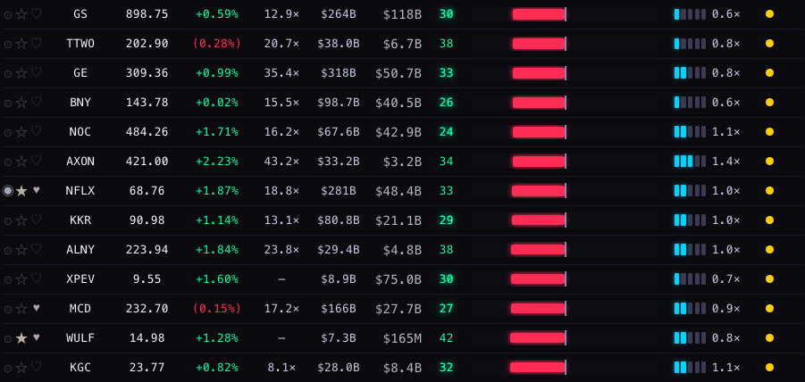
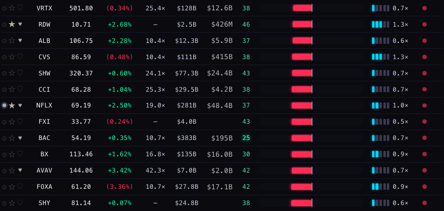
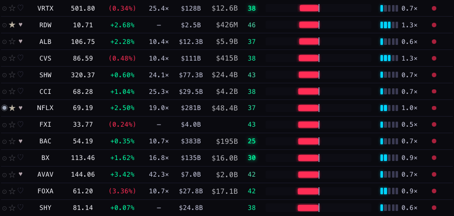
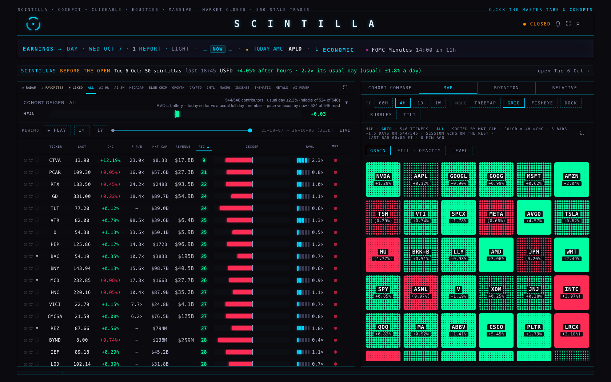
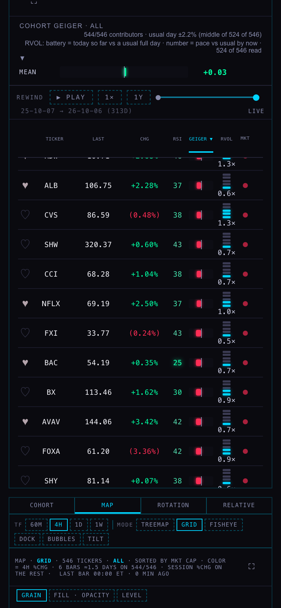
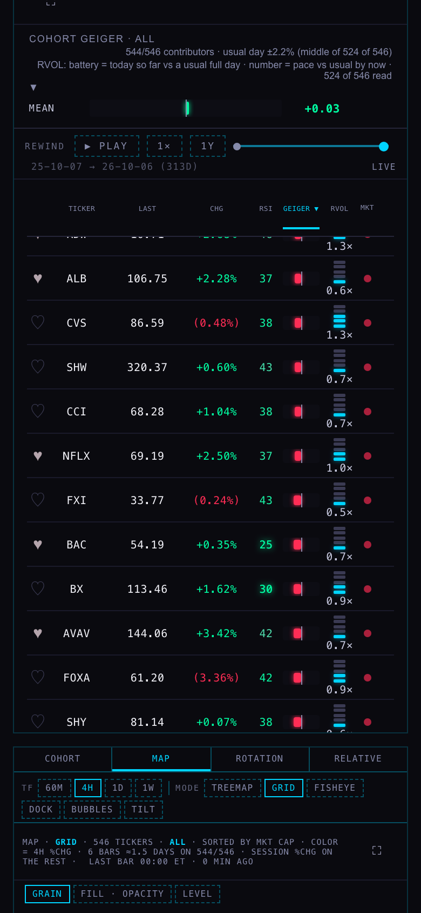
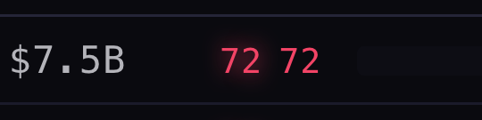
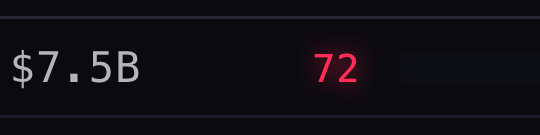
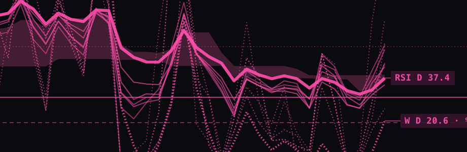
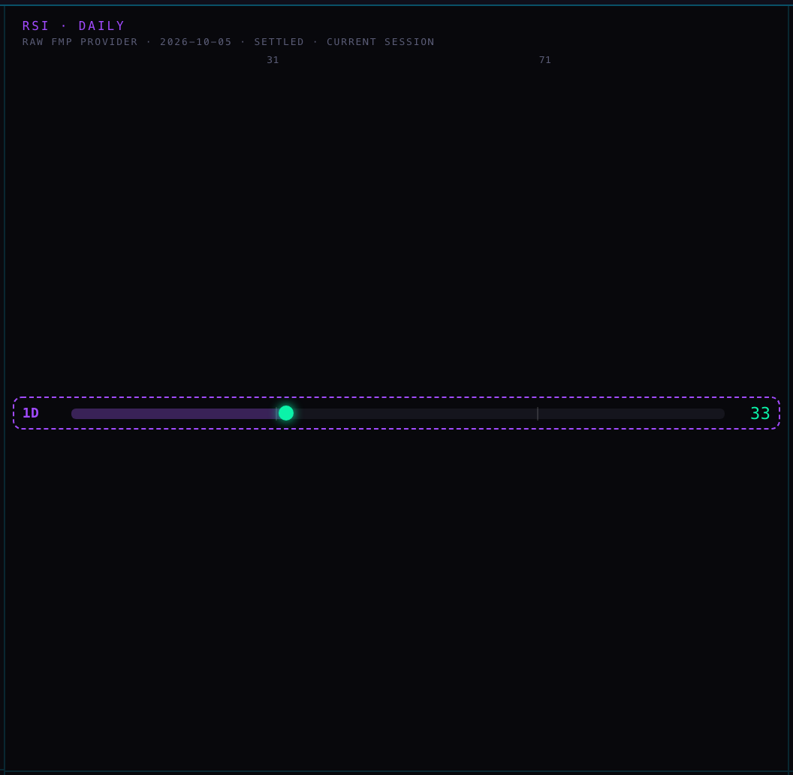

RS1 · RSI COLOURED BY EACH NAME'S OWN EXTREMES
6 Oct 2026 · checked, repaired and re-photographed Oct 7, 02:05 ET · preview only · nothing is live · branches hub/rs1-rsi-own-extremes-20261006 and station/rs1-rsi-own-extremes-20261006The number you flagged — Netflix at 33, before then after
BEFORE (the Hub as it was live, Oct 6, 16:44 ET)
 NFLX reads 33 in a medium green and does not breathe. The cells that breathe are the ones at 30 or lower: GS 30, BNY 26, NOC 24, KKR 29, XPEV 30, MCD 27.
NFLX reads 33 in a medium green and does not breathe. The cells that breathe are the ones at 30 or lower: GS 30, BNY 26, NOC 24, KKR 29, XPEV 30, MCD 27.
AFTER (this branch, Oct 6, 16:45 ET; the glow is photographed at its brightest)

NFLX 33 is a deeper green (rgb(12, 250, 165) against rgb(49, 234, 169) before) and still does not breathe: "33 — lower than 86% of NFLX's last two years", and its own bottom tenth starts at 31. GE 33 and KGC 32 now breathe: for those two names the same kind of number IS inside their own bottom tenth. These two pictures are from the 6 Oct build of the branch; none of the 7 Oct repairs changes the colour or the breath of a cell in them.The same rows today, 1680 wide — before then after
BEFORE (the Hub as it is live, Oct 7, 02:05 ET)

The board now shows the 6 Oct close: NFLX reads 37 and does not breathe. Breathing in this crop: BAC 25.AFTER (this branch, same minute)

NFLX 37: rgb(41, 237, 168) against rgb(67, 226, 172) before — "37 — lower than 76% of NFLX's last two years". Newly breathing in this crop: VRTX 38, BX 30. Stopped breathing: none.The whole screen, sorted by RSI lowest first — before, then after
BEFORE
AFTER

Nothing else on the page moved: same header, tapes, map, columns and row heights. At the very bottom of the RSI range the two rules agree, so these two pictures look alike. Over the whole ALL list 44 RSI cells breathed before and 92 breathe after (of 526 with a number).Phone, 390 wide — before, then after
BEFORE

AFTER

Found on the way — full-screen board: a breathing number was drawn twice
LIVE HUB TODAY · full-screen board

THIS BRANCH · full-screen board

The hover (a browser tooltip never shows in a headless picture, so it is quoted from the page)
| Name | Before | After | Hover, after | |
|---|---|---|---|---|
| NFLX | 37 | 37 | 37 — lower than 76% of NFLX's last two years | the name you flagged |
| TLT | 24 · breathes | 24 · breathes | 24 — lower than 99% of TLT's last two years | inside its own bottom tenth |
| TSM | 73 · breathes | 73 · breathes | 73 — higher than 96% of TSM's last two years | inside its own top tenth |
| SPY | 62 | 62 | 62 — higher than 69% of SPY's last two years | |
| QQQ | 70 | 70 | 70 — higher than 88% of QQQ's last two years | |
| IWM | 41 | 41 | 41 — lower than 84% of IWM's last two years | |
| MU | 54 | 54 | 54 — lower than 58% of MU's last two years | near its own middle |
| CBRS | 43 | 43 | 43 — CBRS has under a year of its own history, so this is coloured on the usual 30 / 70 scale | listed under a year ago: unchanged |
| VIX | 43 | 46 | 46 — lower than 59% of VIX's last two years | see the second call |
| US10Y | 64 | 71 · breathes | 71 — higher than 94% of US10Y's last two years | see the second call |
| GCUSD | 46 | 37 · breathes | 37 — lower than 93% of GCUSD's last two years | see the second call |
Station — the chart's RSI chip and the /geiger row, before then after
BEFORE · TLT chart

AFTER · TLT chart

BEFORE · NFLX chart

AFTER · NFLX chart
AFTER · TSM, on a 4-hour chart

73 — higher than 96% of TSM's last two years: full red, a steady glow, an edge.
AFTER · the whole NFLX pane (nothing else changed)

BEFORE · /geiger, NFLX

AFTER · /geiger, NFLX

The index and macro lines — each one's RSI against its own two years, at the 6 Oct close
SPY (S&P 500 fund) — daily RSI 62 at the 6 Oct close: higher than 69% of its own last two years. Its own top tenth starts at 69: today is 7 points below it. Its 10 pullbacks in that time bottomed at an RSI between 23 and 50, typically 38 (lower than 94% of its days); the last, 16 Sep, bottomed at 42 (lower than 89% of its days).
QQQ (Nasdaq 100 fund) — daily RSI 70 at the 6 Oct close: higher than 88% of its own last two years. Its own top tenth starts at 71: today is 1 point below it. Its 10 pullbacks in that time bottomed at an RSI between 24 and 50, typically 37 (lower than 95% of its days); the last, 16 Sep, bottomed at 44 (lower than 85% of its days).
IWM (Small caps fund) — daily RSI 41 at the 6 Oct close: lower than 84% of its own last two years. Its own top tenth starts at 66: today is 25 points below it. Its 13 pullbacks in that time bottomed at an RSI between 23 and 52, typically 42 (lower than 82% of its days); the last, 31 Jul, bottomed at 42 (lower than 82% of its days). A dip is still running (no swing low confirmed yet): its lowest RSI so far is 30 on 30 Sep (lower than 98% of its days).
RSP (Equal-weight S&P fund) — daily RSI 48 at the 6 Oct close: lower than 75% of its own last two years. Its own top tenth starts at 65: today is 18 points below it. Its 14 pullbacks in that time bottomed at an RSI between 22 and 53, typically 42 (lower than 84% of its days); the last, 23 Jul, bottomed at 49 (lower than 71% of its days). A dip is still running (no swing low confirmed yet): its lowest RSI so far is 29 on 30 Sep (lower than 99% of its days).
SMH (Semiconductors fund) — daily RSI 69 at the 6 Oct close: higher than 83% of its own last two years. Its own top tenth starts at 73: today is 4 points below it. Its 14 pullbacks in that time bottomed at an RSI between 23 and 51, typically 40 (lower than 94% of its days); the last, 14 Sep, bottomed at 42 (lower than 92% of its days).
VIX (Volatility index) — daily RSI 46 at the 6 Oct close: lower than 59% of its own last two years. Its own top tenth starts at 59: today is 13 points below it. (For the volatility index the meaningful extreme is the spike, not the pullback low, so no pullback clause.)
US10Y (Ten-year yield) — daily RSI 71 at the 6 Oct close: higher than 94% of its own last two years. Its own top tenth starts at 67: today is 3 points above it, inside that top tenth. Its 11 pullbacks in that time bottomed at an RSI between 29 and 51, typically 37 (lower than 94% of its days); the last, 25 Jun, bottomed at 42 (lower than 86% of its days). (A high reading here means yields rising.)
DXUSD (Dollar index) — daily RSI 67 at the 6 Oct close: higher than 92% of its own last two years. Its own top tenth starts at 67: today is 1 point above it, inside that top tenth. Its 12 pullbacks in that time bottomed at an RSI between 22 and 50, typically 34 (lower than 93% of its days); the last, 20 Aug, bottomed at 29 (lower than 97% of its days). (A high reading here means the dollar rising.)
GCUSD (Gold) — daily RSI 37 at the 6 Oct close: lower than 93% of its own last two years — inside its own bottom tenth (41 or lower). Its own top tenth starts at 73: today is 35 points below it. Its 13 pullbacks in that time bottomed at an RSI between 25 and 51, typically 45 (lower than 82% of its days); the last, 30 Jun, bottomed at 25 (the lowest of the window). A dip is still running (no swing low confirmed yet): its lowest RSI so far is 33 on 28 Sep (lower than 98% of its days).
CLUSD (Oil) — daily RSI 44 at the 6 Oct close: lower than 72% of its own last two years. Its own top tenth starts at 65: today is 21 points below it. Its 15 pullbacks in that time bottomed at an RSI between 26 and 66, typically 40 (lower than 87% of its days); the last, 5 Aug, bottomed at 42 (lower than 80% of its days). A dip is still running (no swing low confirmed yet): its lowest RSI so far is 44 on 29 Sep (lower than 76% of its days).
BTCUSD (Bitcoin) — daily RSI 63 at the 6 Oct close: higher than 80% of its own last two years. Its own top tenth starts at 69: today is 5 points below it. Its 19 pullbacks in that time bottomed at an RSI between 16 and 48, typically 38 (lower than 88% of its days); the last, 15 Sep, bottomed at 48 (lower than 58% of its days).
HYG (High-yield credit fund) — daily RSI 30 at the 6 Oct close: lower than 96% of its own last two years — inside its own bottom tenth (38 or lower). Its own top tenth starts at 61: today is 31 points below it. Its 14 pullbacks in that time bottomed at an RSI between 18 and 49, typically 37 (lower than 92% of its days); the last, 29 Jul, bottomed at 36 (lower than 93% of its days). A dip is still running (no swing low confirmed yet): its lowest RSI so far is 17 on 1 Oct (lower than 99% of its days).
LQD (Investment-grade credit fund) — daily RSI 28 at the 6 Oct close: lower than 97% of its own last two years — inside its own bottom tenth (34 or lower). Its own top tenth starts at 61: today is 33 points below it. Its 15 pullbacks in that time bottomed at an RSI between 24 and 51, typically 40 (lower than 78% of its days); the last, 8 Jun, bottomed at 42 (lower than 70% of its days). A dip is still running (no swing low confirmed yet): its lowest RSI so far is 23 on 2 Oct (the lowest of the window).
TLT (Long Treasury fund) — daily RSI 24 at the 6 Oct close: lower than 99% of its own last two years — inside its own bottom tenth (34 or lower). Its own top tenth starts at 60: today is 36 points below it. Its 12 pullbacks in that time bottomed at an RSI between 27 and 52, typically 34 (lower than 91% of its days); the last, 18 Aug, bottomed at 31 (lower than 95% of its days). A dip is still running (no swing low confirmed yet): its lowest RSI so far is 22 on 5 Oct (lower than 99% of its days).
What was measured
| Check | Before | After |
|---|---|---|
| NFLX at 37 today, colour | rgb(67, 226, 172) | rgb(41, 237, 168) |
| NFLX at 33 on 6 Oct, colour | rgb(49, 234, 169) | rgb(12, 250, 165) |
| RSI cells that breathe, ALL list (1680 / 390) | 44 / 44 | 92 / 92 |
| Every cell's colour and breath against the rule for the number it shows (1680 / 390) | — | 0 / 0 disagreements in 526 cells |
| Names that breathe, every served name, 6 Oct close | 55 of 597 (30 or lower: 25 · 70 or higher: 30) | 115 of 597 (own bottom tenth: 79 · own top tenth: 36) |
| Start breathing (in their own tenth, but between 30 and 70) | 67 names | |
| Stop breathing (70 or higher, but not in their own top tenth) | AMD 72, JCI 71, LITE 70, MPC 72, PWR 71, VLO 70, XLK 72 | |
| Cells carrying the own-scale hover | 0 | 521 of 526 |
| Where a name's own bottom tenth starts | 30 for every name | between 25 and 44, typically 37; above 30 for 590 of 597 names |
| Where a name's own top tenth starts | 70 for every name | between 57 and 79, typically 68; below 70 for 454 of 597 names |
| Names with a scale / too young / no bars | — | 597 / 4 (CBRS, DRAM, SHAZ, SPCX) / 2 (QRVO, WBD) |
| A name outside the list on screen, searched, whose scale arrives after its number (ACHR 32) | 6 Oct build: stays rgb(47, 235, 169), no breath, no hover line | now: rgb(0, 255, 163), breathes, "32 — lower than 98% of ACHR's last two years" |
| Full-screen board: how far the breathing copy sits from its number (FTNT 72) | 22 px to the left — reads "72 72" (live Hub today) | 0 px |
| The nightly job, run here against a stand-in database: CPU one call uses (the platform allows 2.0 s a call; this Mac is faster than the platform) | the whole night in one call, as scheduled on 6 Oct: 0.8 to 1.8 s over six runs (the recorded run: 1.3 s, and 1.1 s as the first call of a fresh start) | one of 6 shares: 0.2 to 0.3 s |
| The 6 shares together | — | 603 names, 601 rows, no name twice; a dry call made 0 writes; a refused write left 40 rows already saved |
| Station chart: daily-bar requests per pane (NFLX, 1D) | NFLX limit 240 · NFLX limit 642 | NFLX limit 240 · NFLX limit 900 |
| Station chart: reads of the database | 0 | 0 |
| Page errors · writes attempted by the test browser (Hub, four runs) | 0 · 0 | 0 · 0 |
| Page errors · writes attempted (Station, nine pages each) | 0 · 0 | 0 · 0 |
Three calls for you
1 · About twice as many cells breathe. You asked for the breath at each name's own extremes instead of 30 / 70. By definition every name spends a tenth of its days in its own bottom tenth and a tenth in its top tenth, so on an ordinary day about one RSI cell in five breathes; under 30 / 70 it is about one in ten (55 names at the 6 Oct close, 115 with the own rule). Recommended: ship it as you asked and look at the board for a day. If it is too busy, the breath can be kept for the rarer own 5th / 95th (about one cell in ten) while the colour stays as it is — a one-number change.
2 · VIX, the ten-year, the dollar, oil and gold are showing a two-week-old RSI on the live Hub. Those five cells are filled from a file built on 23 Sep, so the live Hub reads VIX 43, ten-year 64, dollar 64, gold 46; at the 6 Oct close they were 46, 71, 67 and 37. This branch fills them from the new nightly table, so they stay current. A high reading is coloured red for these too, although for VIX and yields "high" is not the same kind of news as for a stock. Recommended: take the fresh numbers; keep one colour rule for now and decide the direction for VIX and yields when you look at them on the board.
3 · Three places still use a fixed RSI line and were left alone. The ALLOCATION page's OVERSOLD search (your dial, RSI 40 or lower), the Station's /ranks and /reflow pages (coloured by rank across names, highest green) and the Station detail view's "bands 30 · 70". Changing the search changes which names it proposes, so it is not a recolour. Recommended: leave them; move the OVERSOLD search to each name's own bottom tenth as its own piece of work if you want it.
PAGE SPECS
What it shows. The Hub board's RSI column and the Station's two daily-RSI readouts, coloured by where each name's number sits in that name's own last two years instead of on one 30 / 70 ruler. Same palette as before: neutral at the name's own middle, full green at its own 10th percentile or lower, full red at its own 90th or higher; the breathing glow at those own extremes; a hover such as "37 — lower than 76% of NFLX's last two years" (the same line is in the panel a tap opens, because a phone has no hover).
Where each number comes from.
- The number in the cell is unchanged: the stored daily RSI(14) the board already printed (FMP's, last settled close).
- The name's own scale is a new nightly table,
public.rsi_own_percentiles: for each name, the RSI value at every percentile 0..100 of the two calendar years of finished daily sessions before the newest close. It is computed from the chart API's daily bars with Wilder's RSI(14). That is the same measure as the number in the cell: on the 587 names where both described the 6 Oct close, 578 were within 0.05 of each other (median gap 0.00, largest 0.27; measured Oct 7, 01:46 ET). - "Lower than 76%" is 100 minus the percentile of the number on that grid. The window is the sessions BEFORE the close being read ("prior observations only", the rule the research pages use). A name with more than one year but less than two says how long its window really is ("last 18 months").
- Under one year of history (CBRS, DRAM, SHAZ, SPCX): no own scale; the cell keeps the 30 / 70 colouring and its hover says so.
- The Station chart does not read the database (it never has). It builds the same scale in the browser from the daily bars it already loads, with the same rule; the tests run the Station's code against the Hub loader's rows so the two cannot drift. Its long daily read is longer: NFLX limit 240 · NFLX limit 642 before, NFLX limit 240 · NFLX limit 900 after — the same number of requests.
- The index and macro lines. Same ruler. A pullback is the swing rule the research pages use: from a swing high to the next swing low (a swing point is a bar beyond the 10 bars on each side); its RSI low is the lowest daily RSI in between; only pullbacks whose low falls inside the two-year window count.
The coordinator's 5 Oct numbers, checked. RSI · percentile · own 10th · own 90th · last pullback low:
| Coordinator | This branch, 5 Oct close | |
|---|---|---|
| SPY | 58.8 · 56th · 41.6 · 70.0 · 41.8 | 58.83 · 58th · 41.6 · 69.0 · 41.8 |
| QQQ | 68.4 · 81st · 41.3 · 71.4 · 44.0 | 68.45 · 85th · 41.3 · 70.7 · 44.0 |
The RSI, the 10th and the last pullback low agree (68.45 is the 68.4 quoted). The percentile and the 90th differ because of where the RSI calculation was started: begun at the first bar of a two-year read, its first weeks are not yet settled and sit inside the sample; that way of counting gives SPY 56th with a 90th of 70.0 and QQQ 82nd with a 90th of 71.1 (checked on 7 Oct). Begun years earlier, so every day in the window is the RSI a chart would have shown that day, the same two years give the right-hand column. The table uses the settled one.
The AFTER pictures need a table that is not in the database yet. The migration is written and not applied. For the pictures, the one read of that table was answered from the loader's dry run (601 rows from the live chart API, all as of the 6 Oct close) in the shape the database would send; every other read was live. Before the table exists the page asks once, gets "not found", and stays on 30 / 70 for that page load — so the code is safe to ship first.
Checked and repaired on 7 Oct (the 6 Oct session ran out of capacity during its own review, before reading what the review found). Both branches carry everything live has: the Station's 6 Oct evening work, and the Hub's compare-on-one-screen work that went live at 01:57 ET while this was being checked — the pictures on this page were taken after that, against that live page.
- "The lowest reading" was said of a name that had been lower. A reading a hair inside a name's range rounded to exactly 0 or 100 (Corteva: 6.4 against a lowest day of 5.7). 0 and 100 are now kept for the true ends; in today's pictures it reads "9 — lower than 99% of CTVA's last two years". One stored number in 601 changes.
- A searched name outside the list on screen kept the 30 / 70 colour when its own scale arrived after its number, until the next board refresh. Reproduced in a headless browser on the 6 Oct build and gone on this one (the row in the table above).
- The nightly job asked for the whole night in one call and wrote everything in one write after the last name. The platform allows a call 2.0 seconds of CPU; run here, on a faster machine than the platform's, that one call used between 0.8 and 1.8 s over six runs — so on the platform's slower cores it would very likely have been cut off each night, and a cut pass wrote nothing. The night is now 6 calls a minute apart, each a sixth of the names (0.3 s at most in the recorded run here, and half the volume of a nightly job that already runs clean), and each saves every 40 names. It also reads 900 daily bars a name instead of 1,300: a third fewer bytes, and every one of the 601 stored scales is identical to two decimals either way (compared on the 5 Oct close).
- The loader ended "successfully" with nothing loaded when the chart API refused every name, and a name typed twice would have made the database refuse the whole write. Both closed.
- In the board's full-screen mode a breathing number was drawn twice ("72 72"): the glowing copy was centred in a cell that mode aligns to the right. This is on the live Hub today (it came with the 6 Oct change that made the breath cheap) and would have shown twice as often with twice as many cells breathing. The copy now follows the number. One word in one style rule; the coordinator can leave it out without touching anything else.
- Two of the index lines disagreed with the board by one point (the dollar read 68 in its line and 67 on the board) because the line was rounded twice. Rounded once now; every line above matches its cell.
What could be wrong.
- The nightly job has still not run on the platform. Its own code was run here against a stand-in for the database (6 shares, 601 rows, nothing sent anywhere), and a share is sized at half of a job that runs clean there — but that is a sizing, not a run. Before the schedule is applied the deployed function should be called once with
?dry=1&part=1&of=6; if the platform still cuts it off, one number in the schedule file makes it twelve shares. This is written at the top of that file. - The newest daily bar of the macro series was still moving a day later. Read on 6 Oct at about 16:20 ET and again on 7 Oct at about 01:30 ET, the 5 Oct reading differed for seven of them (the dollar 72.3 to 74.2, gold 34.5 to 33.5, Bitcoin 65.1 to 64.5, three yields); no stock or fund differed. The job is scheduled for 19:30 ET and again for 07:30 ET; the morning pass would pick a later bar up. One observation, not a measured rule.
- Corteva's RSI of 9 is a data artefact: its daily closes step from 77.65 on 30 Sep to 12.57 on 1 Oct on twenty times its usual volume, which looks like a corporate action the history was not adjusted for. It will read as the deepest green on the board until that history is corrected. Not this lane's to fix.
- QRVO and WBD have no row: the chart API answers "provider published no daily aggregate" for them. They keep 30 / 70.
- The scale is finished sessions; the Station chip includes today's forming bar during the session. The chip's percentile is then "today so far against the days before".
What was not done. Nothing is deployed, the table is not created, the nightly job is not scheduled, no row is written. The ALLOCATION search, /ranks, /reflow and the Station detail view were left as they are (third call). The lines above are not on the live Hub page: they are here and in the return. No own 10th / 90th guide lines were drawn on the Station's oscillator pane (its look is the Indicator Lab's and its guides are pinned). The Station side had no second reader: its review did not finish on 6 Oct and on 7 Oct it was read by the same session that repaired the Hub side.
For the coordinator. Apply supabase/migrations/20261006_rsi_own_percentiles.sql (rollback beside it) · dry run: node scripts/rsi-own-load.mjs --dry · load: the same without --dry and with the two environment keys, or data/rsi-own-load.sql (601 names, 6 Oct close) · nightly: deploy supabase/functions/rsi-own-daily, call it once with ?dry=1&part=1&of=6, then 20261006_rsi_own_daily_cron.sql (12 jobs: 6 at 19:30–19:35 ET, 6 at 07:30–07:35 ET; its rollback removes them all).
Tests. Hub tests/rsi-own-extremes.test.mjs (19) and the re-pinned glow test; Station tests/station-rs1-rsi-own-20261006.test.mjs (8). Run on 7 Oct against live: the Hub fails the same 7 tests on this branch as on live (2,018 tests here, 1,999 live, after live took the compare-on-one-screen work at 01:57 ET and it was merged in), the Station the same 18 (1,028 here, 1,020 live).
The same lines at the 5 Oct close (the day of the coordinator's numbers; recomputed 7 Oct with the provider's settled bars):
SPY (S&P 500 fund) — daily RSI 59 at the 5 Oct close: higher than 58% of its own last two years. Its own top tenth starts at 69: today is 10 points below it. Its 10 pullbacks in that time bottomed at an RSI between 23 and 50, typically 38 (lower than 94% of its days); the last, 16 Sep, bottomed at 42 (lower than 89% of its days).
QQQ (Nasdaq 100 fund) — daily RSI 68 at the 5 Oct close: higher than 85% of its own last two years. Its own top tenth starts at 71: today is 2 points below it. Its 10 pullbacks in that time bottomed at an RSI between 24 and 50, typically 37 (lower than 95% of its days); the last, 16 Sep, bottomed at 44 (lower than 85% of its days).
IWM (Small caps fund) — daily RSI 44 at the 5 Oct close: lower than 79% of its own last two years. Its own top tenth starts at 66: today is 22 points below it. Its 13 pullbacks in that time bottomed at an RSI between 23 and 52, typically 42 (lower than 82% of its days); the last, 31 Jul, bottomed at 42 (lower than 82% of its days). A dip is still running (no swing low confirmed yet): its lowest RSI so far is 30 on 30 Sep (lower than 98% of its days).
RSP (Equal-weight S&P fund) — daily RSI 43 at the 5 Oct close: lower than 83% of its own last two years. Its own top tenth starts at 65: today is 22 points below it. Its 14 pullbacks in that time bottomed at an RSI between 22 and 53, typically 42 (lower than 84% of its days); the last, 23 Jul, bottomed at 49 (lower than 71% of its days). A dip is still running (no swing low confirmed yet): its lowest RSI so far is 29 on 30 Sep (lower than 99% of its days).
SMH (Semiconductors fund) — daily RSI 69 at the 5 Oct close: higher than 84% of its own last two years. Its own top tenth starts at 73: today is 3 points below it. Its 14 pullbacks in that time bottomed at an RSI between 23 and 51, typically 40 (lower than 94% of its days); the last, 14 Sep, bottomed at 42 (lower than 92% of its days).
VIX (Volatility index) — daily RSI 49 at the 5 Oct close: higher than 55% of its own last two years. Its own top tenth starts at 59: today is 11 points below it. (For the volatility index the meaningful extreme is the spike, not the pullback low, so no pullback clause.)
US10Y (Ten-year yield) — daily RSI 76 at the 5 Oct close: higher than 99% of its own last two years. Its own top tenth starts at 67: today is 9 points above it, inside that top tenth. Its 11 pullbacks in that time bottomed at an RSI between 29 and 51, typically 37 (lower than 94% of its days); the last, 25 Jun, bottomed at 42 (lower than 86% of its days). (A high reading here means yields rising.)
DXUSD (Dollar index) — daily RSI 74 at the 5 Oct close: higher than 99% of its own last two years. Its own top tenth starts at 67: today is 7 points above it, inside that top tenth. Its 12 pullbacks in that time bottomed at an RSI between 22 and 50, typically 34 (lower than 93% of its days); the last, 20 Aug, bottomed at 29 (lower than 97% of its days). (A high reading here means the dollar rising.)
GCUSD (Gold) — daily RSI 33 at the 5 Oct close: lower than 97% of its own last two years — inside its own bottom tenth (41 or lower). Its own top tenth starts at 73: today is 39 points below it. Its 13 pullbacks in that time bottomed at an RSI between 25 and 51, typically 45 (lower than 82% of its days); the last, 30 Jun, bottomed at 25 (the lowest of the window). A dip is still running (no swing low confirmed yet): its lowest RSI so far is 33 on 28 Sep (lower than 98% of its days).
CLUSD (Oil) — daily RSI 44 at the 5 Oct close: lower than 72% of its own last two years. Its own top tenth starts at 65: today is 21 points below it. Its 15 pullbacks in that time bottomed at an RSI between 26 and 66, typically 40 (lower than 87% of its days); the last, 5 Aug, bottomed at 42 (lower than 80% of its days). A dip is still running (no swing low confirmed yet): its lowest RSI so far is 44 on 29 Sep (lower than 76% of its days).
BTCUSD (Bitcoin) — daily RSI 65 at the 5 Oct close: higher than 82% of its own last two years. Its own top tenth starts at 69: today is 4 points below it. Its 19 pullbacks in that time bottomed at an RSI between 16 and 48, typically 38 (lower than 88% of its days); the last, 15 Sep, bottomed at 48 (lower than 58% of its days).
HYG (High-yield credit fund) — daily RSI 20 at the 5 Oct close: lower than 99% of its own last two years — inside its own bottom tenth (38 or lower). Its own top tenth starts at 61: today is 40 points below it. Its 14 pullbacks in that time bottomed at an RSI between 18 and 49, typically 37 (lower than 92% of its days); the last, 29 Jul, bottomed at 36 (lower than 93% of its days). A dip is still running (no swing low confirmed yet): its lowest RSI so far is 17 on 1 Oct (lower than 99% of its days).
LQD (Investment-grade credit fund) — daily RSI 23 at the 5 Oct close: the lowest reading of its own last two years — inside its own bottom tenth (34 or lower). Its own top tenth starts at 61: today is 38 points below it. Its 15 pullbacks in that time bottomed at an RSI between 24 and 51, typically 40 (lower than 78% of its days); the last, 8 Jun, bottomed at 42 (lower than 70% of its days). A dip is still running (no swing low confirmed yet): its lowest RSI so far is 23 on 2 Oct (the lowest of the window).
TLT (Long Treasury fund) — daily RSI 22 at the 5 Oct close: the lowest reading of its own last two years — inside its own bottom tenth (34 or lower). Its own top tenth starts at 60: today is 38 points below it. Its 12 pullbacks in that time bottomed at an RSI between 27 and 52, typically 34 (lower than 91% of its days); the last, 18 Aug, bottomed at 31 (lower than 95% of its days). The dip still running (no swing low confirmed yet) made its lowest RSI so far today.